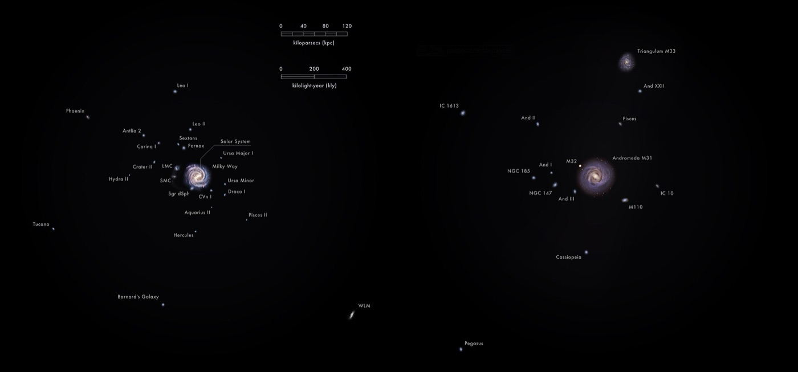

The Local Group — our gravitationally bound neighbourhood
The Local Group is the small cluster of ~80 known galaxies bound to the Milky Way and Andromeda by mutual gravity. It is about 3 megaparsecs across and contains essentially every galaxy close enough to study individual stars in.
The Local Group is dominated by three spiral galaxies — the Milky Way, Andromeda (M31), and the Triangulum Galaxy (M33). Around the Milky Way and Andromeda are clouds of satellite galaxies, mostly small and faint — the Magellanic Clouds, Sagittarius Dwarf, Sculptor, Fornax, Draco, the Leo dwarfs, and many more. Total members known today: about 80, and the count keeps rising as deep imaging surveys (DES, LSST, Euclid) find ultra-faint dwarfs missed by earlier searches. The whole structure is gravitationally bound — it is not expanding with the Hubble flow, and the Milky Way and Andromeda are actually approaching each other at about 110 km/s.
The boundary of the Local Group is not sharp. The conventional outer edge is the zero-velocity surface, the imaginary surface at which a test galaxy would have just enough kinetic energy to escape the group's gravity but no more — roughly 1.5 Mpc from the Milky Way / Andromeda barycentre. Inside that radius, members are bound; outside it, galaxies belong to the broader Local Sheet and feel the Hubble expansion. The Sculptor Group, the Maffei Group, the M81 Group, and the Centaurus A Group are all within 4 Mpc of the Milky Way — close neighbours, but not Local Group members.
The Local Group matters out of proportion to its size. Because everything in it is within a few million light-years, individual stars in Local Group members can be resolved with HST, JWST, and the largest ground-based telescopes. This is where almost all stellar-population science gets done: variable-star distance calibration (the Hubble constant ladder starts with Cepheids in M31, M33, and the LMC), dwarf-galaxy dark-matter measurements (Draco, Fornax, the Leo dwarfs have stellar velocity dispersions consistent with mass-to-light ratios of 100+ — meaning they are dominated by dark matter), and galactic archaeology (the stellar streams of Sagittarius being torn apart by the Milky Way tide are mapped star-by-star). Galaxies further out have to be studied as ensembles; Local Group galaxies are studied star by star.
Long-term trajectory: gravity has the last word. In about 4.5 billion years the Milky Way and Andromeda will pass close enough to begin tidal disruption — the so-called 'Milkomeda' merger first predicted in detail by Cox & Loeb (2008) and refined by Gaia DR3 proper-motion measurements (van der Marel et al. 2019). The merger will take perhaps 2 billion years to complete and will leave behind a single elliptical galaxy. By the time it finishes, the Sun (still a main-sequence star, only ~6 Gyr old at the merger) will likely be ejected to a much larger orbit or remain in a thick disc remnant. The remaining Local Group galaxies will continue merging into the new central elliptical over the next ~100 Gyr, leaving 'Milkomeda' as the only galaxy visible from Earth's eventual successor planet, the cosmic-web filaments having long since carried other groups away in the accelerating Hubble flow.

SEE IN THE APP
- /explore Local Group billboard overlay — 15 named members plotted on the celestial sphere via the Science Lens 'Galaxies' layer